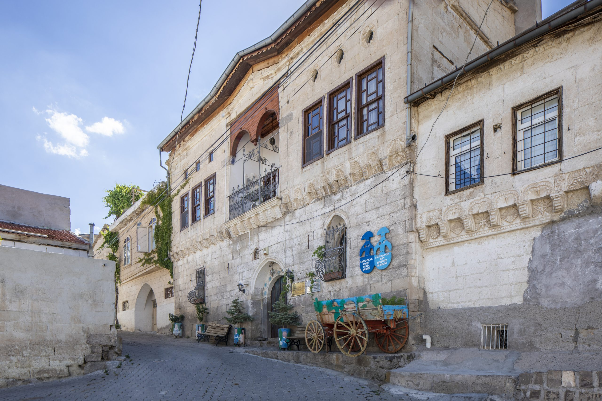
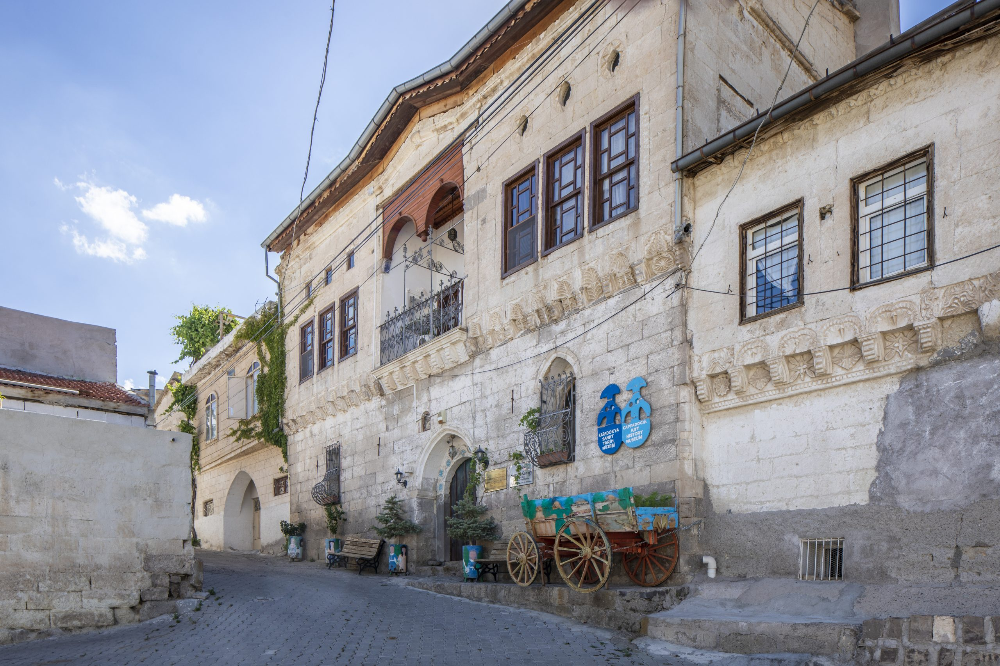
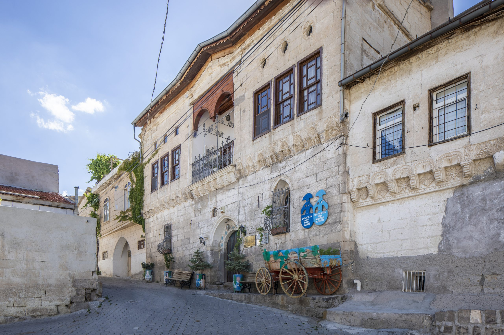

Giriş Ücreti: 2025 yılı için 80 TL
Ziyaret Saatleri: 09:00 - 18:00
Adres: Kapadokya Sanat ve Tarih Müzesi, Nevşehir
Kapadokya Sanat ve Tarih Müzesi, bölgenin kültürel mirasını ve tarihini yansıtan eserlerle doludur. Müzede Kapadokya'ya özgü sanat eserleri ve arkeolojik buluntular sergilenmektedir.
Müze, Kapadokya'nın tarihini ve sanatını tanıtmak amacıyla kurulmuştur. Sergilenen eserler, bölgenin geçmişine ışık tutar.
